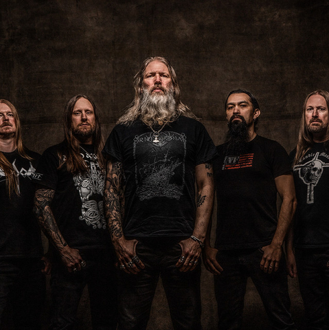

Github do criador
Página principal
Formulário
Criador

Função dos membros
Johan Hegg - vocal
(1992–presente)
Olavi Mikkonen - guitarra
(1992–presente)
Ted Lundström - baixo
(1992–presente)
Johan Söderberg - guitarra
(1998–presente)
Jocke Wallgren - bateria
(2016–presente)
Álbuns da banda
Nome
Data de lançamento
The Great Heathen Army
2022
Berserker
2019
Jomsviking
2016
Deceiver of the Gods
2013
Twilight of the Thunder God
2008